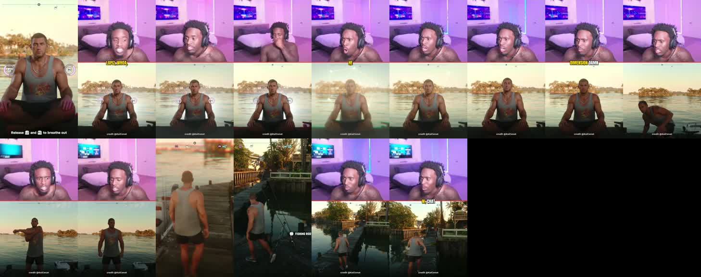
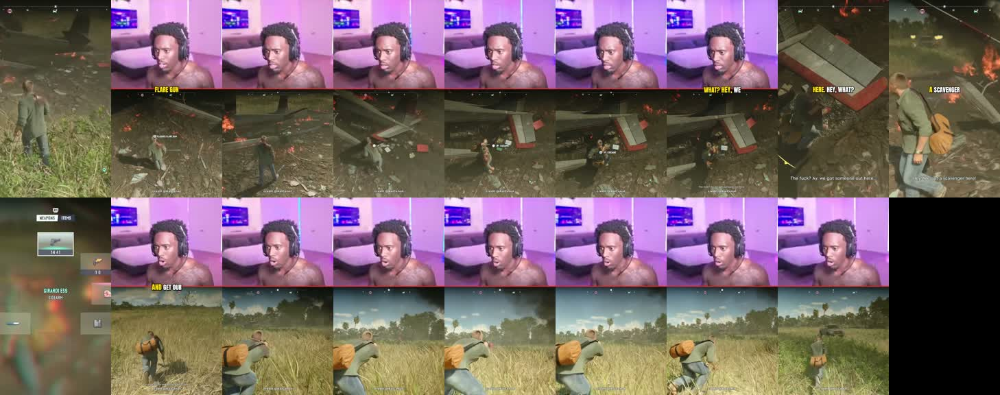

The earlier versions are the two editorial exports in the release folder Luffy identified. The numbered download copies were unavailable for a byte-for-byte match. Each pair comes from the same source recording. The clocks can diverge after a cut.
The opening restores the original instruction “Release L2 and R2 to breathe out.” It uses the first 2.35 seconds, then skips the wait before the response. The image cuts back to Kai at his first response. During the change at the dock the game fills the frame again. The ending keeps his verdict, “That was a W, chat.” The opening transcript still has a disputed word.
These changes use an instantaneous change of shot size. There is no animated zoom. No graphic title was burned. Caption words stay on the seam and the original audio continues through picture-only cuts.

Caption samples 2.35s Lapiz, · 2.87s whoa, · 8.82s he · 13.83s unlocks · 14.15s like · 14.29s another · 14.67s dimension · 15.25s Damn · 21.17s Damn
Burned 14 of 14 selected ASR words. Recognizers disagreed on some words. Network connections recorded by the Python process: 0. The render container also had external networking disabled.
Per-render ASR cache and model receipt · Final EDL, caption timings, provider selection, environment overrides and encoder filter graphs · ffprobe · File hashes and source audio alignment
The opening follows the avatar toward the wreckage. The flare-gun pickup supplies context, the spoken warning changes the stakes, and the next gameplay close-up shows the confrontation. Original game audio carries the pursuit.
These changes use an instantaneous change of shot size. There is no animated zoom. No graphic title was burned. Caption words stay on the seam and the original audio continues through picture-only cuts.

Caption samples 2.50s flare · 2.74s gun · 9.14s Cocaine · 12.48s What? · 12.88s Hey, · 13.50s we · 13.74s got · 14.00s someone · 14.36s out
Burned 35 of 35 selected ASR words. Recognizers disagreed on some words. Network connections recorded by the Python process: 0. The render container also had external networking disabled.
Per-render ASR cache and model receipt · Final EDL, caption timings, provider selection, environment overrides and encoder filter graphs · ffprobe · File hashes and source audio alignment
The release launcher supplied an editorial headline and preloaded cached source decodes. Both release sidecars record the selected Groq transcript. The gaming branch rebuilt the EDL as one uninterrupted segment and cleared zooms, overlays and SFX. It called the EDL builder with B-roll disabled and set music volume to zero. Its plain-layout delegation produced the face/game stack. An enabled finish pass could still draw the title. Enabling that pass alone supplied no reaction timestamp or evidence for a punch-in.
For the new exports the planner samples the central gameplay picture twice per second, measures changes away from the embedded webcam, and uses the timed transcript to choose the return to the streamer. Its decisions now reach FFmpeg before subtitle burn-in. An earlier visual setup can replace a repetitive silent lead. The quality gate preserves the 30-second minimum and keeps speech out of the removed spans. The actual ranges above show where a splice was made.
Audio and assets. Both historical jobs selected the original game/stream mix. The old release sidecars contain no stock accept/reject ledger. The launcher and finisher have no stock search on this path. The new EDLs contain no B-roll, music bed or SFX. There was no provider search, download, transition-library selection, synthetic impact or music duck. The game supplies both the subject and the payoff in these two recordings. The rendered audio was decoded and compared with the source. Audibility, comic timing and audience retention still require a listener.
The earlier separate provider smoke test recorded the following. Authentication or model availability during that test cannot establish a request by a particular export. The prior release used cached results for both videos. No per-request receipt survives for their original recognition requests. The new runs did not request fresh hosted inference, use a remote vision model or download assets.
| Provider | Key, authentication and model evidence | Role in these cuts |
|---|---|---|
| Groq | Key present and authenticated in earlier audit. openai/gpt-oss-120b completed a separate chat probe. The source ASR workflow used whisper-large-v3-turbo. | Cached audio words selected for both clips. No fresh chat or transcription request for these encodes. |
| Local Whisper | Offline large-v3 source decodes exist for both windows. No API key applies. | Independent word coverage and timing reference. The smaller faster-whisper fallback was unnecessary. |
| NVIDIA | Key present, authentication and nvidia/nemotron-3-ultra-550b-a55b test inference succeeded. Several alternative slugs were absent. | No verified shot, sound or title decision from NVIDIA. |
| OpenRouter | Key present, authenticated; nvidia/nemotron-3-ultra-550b-a55b:free passed the earlier probe. | No verified call or result consumed. |
| Cloudflare | Account and key passed the earlier audit. Its chat probe targeted @cf/openai/gpt-oss-120b. | No verified call or result consumed. |
| Ollama | Earlier service inventory found four models including qwen3:8b. No authentication or generation test was recorded. | No inference evidence. |
| DeepSeek / Hugging Face | Earlier key checks passed. DeepSeek inference was skipped for cost. Hugging Face has no inference receipt. | No verified use. |
| Pixabay / Coverr / Openverse | Credentials and availability untested in these jobs. | No searches, downloads or accepted assets. The stock picker was bypassed. |
All ten overrides were unset inside both new encoder processes. The original release launcher explicitly set HOOK_FINISH, STYLED_HOOK_TITLE and REACTION_PUNCH on. It did not forward the ten flags below. A snapshot of the retired encoder environments was unavailable, so those historical effective values cannot be independently certified.